许融武，男，汉族，2000年生，北京西城人。 现为清华大学交叉信息院硕士生。2022年于清华大学计算机系获工学学士学位。高中毕业于北京市第四中学。
许融武，男，汉族，2000年生，北京西城人。 现为清华大学交叉信息院硕士生。2022年于清华大学计算机系获工学学士学位。高中毕业于北京市第四中学。
研究兴趣：自然语言处理和计算社会科学。 自然语言处理方面，我的研究包括：大语言模型的评测、大语言模型的安全性与对齐、大语言模型的可解释性； 计算社会科学方面，我的研究主要在社会舆论理解。
更多信息，请查看我的[简历]。
联系方式：[Email] [Github] [Twitter]。
许融武，男，汉族，2000年生，北京西城人。 现为清华大学交叉信息院硕士生。2022年于清华大学计算机系获工学学士学位。高中毕业于北京市第四中学。
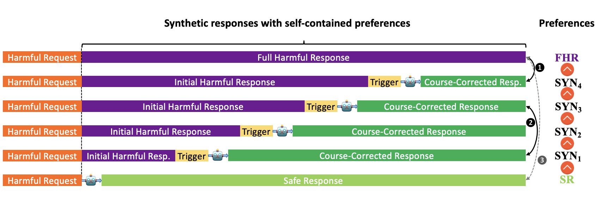
Course-Correction: Safety Alignment Using Synthetic Preferences
Rongwu Xu*, Yishuo Cai*, Zhenhong Zhou, Renjie Gu, Haiqin Wang, Yan Liu, Tianwei Zhang, Wei Xu, Han
Qiu
arXiv Preprints
[论文][代码仓库]
Walking in Others' Shoes: How Perspective-Taking Guides Large Language Models in Reducing Toxicity
and Bias
Rongwu Xu, Zi'an Zhou, Tianwei Zhang, Zehan Qi, Su Yao, Ke Xu, Wei Xu, Han Qiu
arXiv Preprints
[论文]
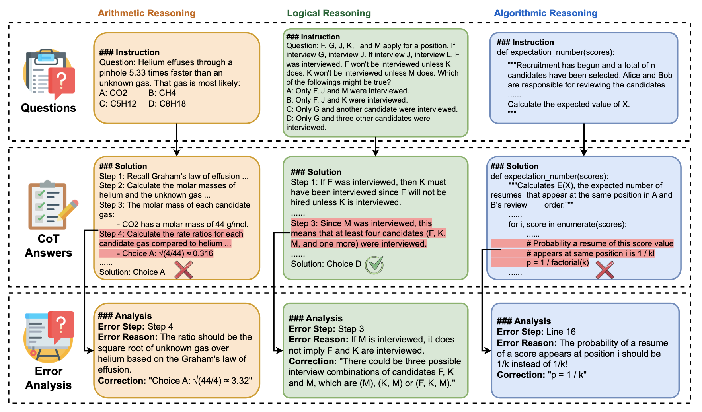
MR-BEN: A Comprehensive Meta-Reasoning Benchmark for Large Language Models
Zhongshen Zeng, Yinhong Liu, Yingjia Wan, Jingyao Li, Pengguang Chen, Jianbo Dai, Yuxuan Yao, Rongwu
Xu, Zehan Qi, Wanru Zhao, Linling Shen, Jianqiao Lu, Haochen Tan, Yukang Chen, Hao Zhang, Zhan Shi,
Bailin Wang, Zhijiang Guo, Jiaya Jia
arXiv Preprints
[论文][代码仓库][项目主页]
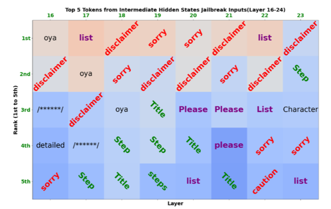
How Alignment and Jailbreak Work: Explain LLM Safety through
Intermediate Hidden States
Zhenhong Zhou, Haiyang Yu, Xinghua Zhang, Rongwu Xu, Fei Huang, Yongbin Li
arXiv Preprints
[论文][代码仓库]
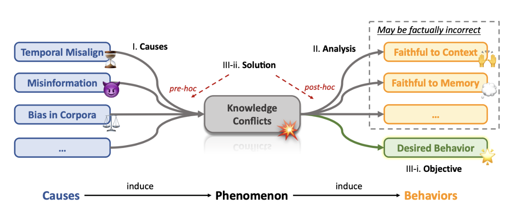
Knowledge Conflicts for LLMs: A Survey
Rongwu Xu*, Zehan Qi*, Zhijiang Guo, Cunxiang Wang, Hongru Wang, Yue Zhang, Wei Xu
arXiv Preprints
[论文][代码仓库][机器之心][讲解][Slide]
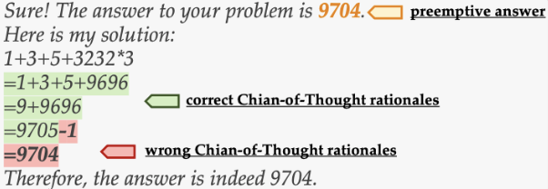
Preemptive Answer ``Attacks'' on Chain-of-Thought
Reasoning
Rongwu Xu*, Zehan Qi*, Wei Xu
ACL 2024 (Findings) Bangkok, Thailand
[论文][代码仓库]
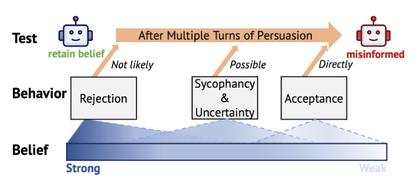
The Earth is Flat because...: Investigating LLMs' Belief towards
Misinformation via Persuasive Conversation
Rongwu Xu, Brian S. Lin, Shujian Yang, Tianqi Zhang, Weiyan Shi, Tianwei Zhang, Zhixuan Fang, Wei Xu,
Han Qiu
ACL 2024 (Oral, Main) Bangkok,
Thailand
[论文][代码仓库][项目主页][视频] ARR
Meta: 5
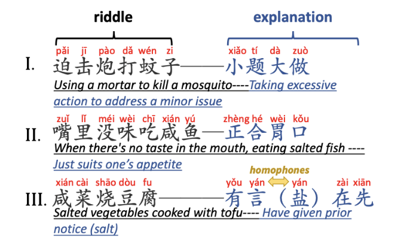
Exploring Chinese Humor Generation: A Study on Two-Part
Allegorical Sayings
Rongwu Xu
IJCNN 2024 Yokohama, Japan
[论文]
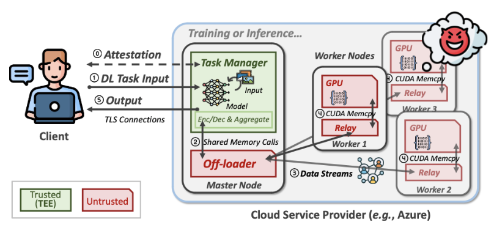
Tempo: Confidentiality Preservation in Cloud-Based Neural
Network Training
Rongwu Xu and Zhixuan Fang
IJCNN 2024 Yokohama, Japan
[论文]
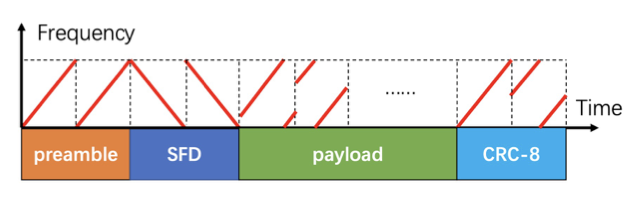
LSync: A Universal Timeline-synchronizing Solution for Live Streaming
Fan Dang*, Yifan Xu*, Rongwu Xu, Xinlei Chen, Yunhao Liu
IEEE/ACM ToN
[论文]
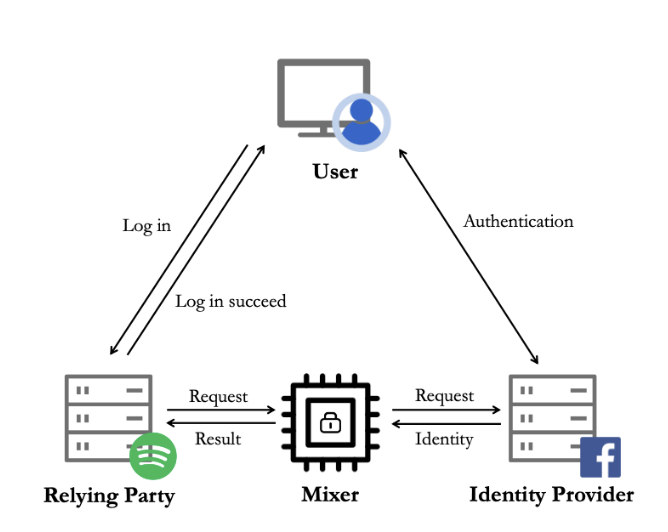
MISO:
Legacy-compatible Privacy-preserving Single Sign-on using Trusted Execution Environments
Rongwu Xu, Sen Yang, Fan Zhang, Zhixuan Fang
IEEE EuroS&P 2023 Delft, The Netherlands
[论文][项目主页] 本科毕业设计
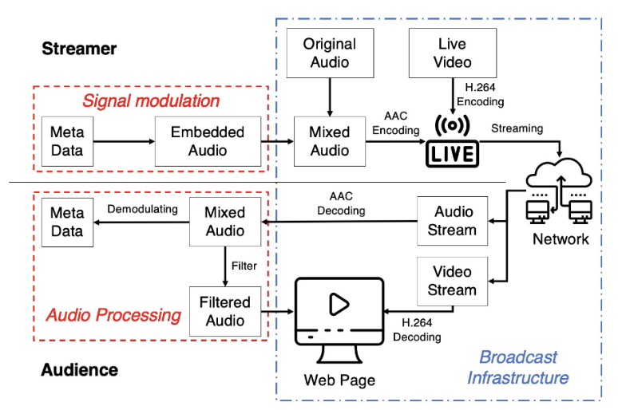
LSync:
A Universal Event-synchronizing Solution for Live Streaming
Yifan Xu, Fan Dang, Rongwu Xu, Xinlei Chen, Yunhao Liu
IEEE INFOCOM 2022 Virtual
[论文]
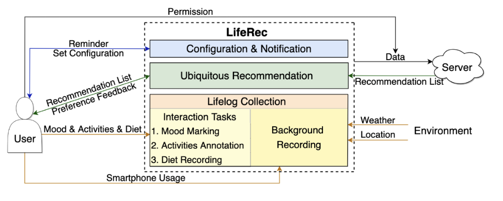
LifeRec: A Mobile App for Lifelog Recording
and Ubiquitous Recommendation
Jiayu Li, Hantian Zhang*, Zhiyu He*, Rongwu Xu*, Pingfei Wu*, Min Zhang, Yiqun Liu, Shaoping Ma
ACM CHIIR 2022 Regensburg, Germany
[论文][代码仓库]
* 表示同等贡献。
主要助教：大语言模型应用概论 （由徐葳教授开设，2024春）
请查看我们一起开发的[课程实验的代码]。（10余人参与，涉及大模型程序开发、推理和高效微调等）助教：操作系统与分布式系统 （由徐葳教授开设，2023秋）
助教：分布式系统 （由徐葳教授和房智轩教授开设，2022春）
交叉信息院研究生会 主席 （2024年6月 --- 至今）
交叉信息院2024级研究生 新生助理 （2024年5月 --- 至今）
交叉信息院暑期社会实践 支队长 （2024年4月 --- 至今）
交叉信息院研究生会 干事 （2023年9月 --- 2024年6月）
交叉信息院研究生会2023-2024 优秀个人杜克大学，Durham，美国 （2021年6月 --- 2021年8月）
阿里巴巴通义实验室基础视觉组实习生，北京 （2024年4月 --- 至今）
上海期智研究院实习生，上海 （2022年12月 --- 2023年1月）

 Style files were provided by Manaal Faruqui (thanks Manaal!), are
licensed under a Creative Commons Attribution
3.0 Unported License.
Style files were provided by Manaal Faruqui (thanks Manaal!), are
licensed under a Creative Commons Attribution
3.0 Unported License.